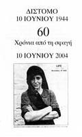
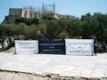
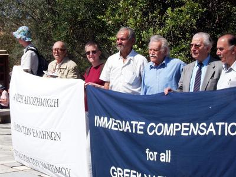
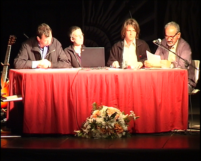
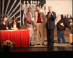
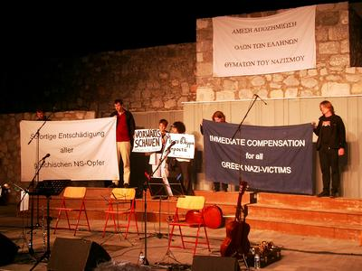
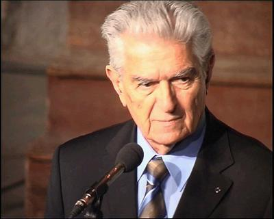
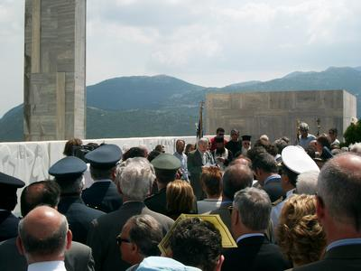

|

Am 10. Juni 2004 wurde in Distomo der 60. Jahrestag des Massakers
begangen, bei dem deutsche SS-Soldaten 1944 218 Bewohnerinnen und
Bewohner des Ortes ermordet hatten. Wie jedes Jahr fanden in Distomo
eine Reihe von
Gedenkveranstaltungen, überwiegend kultureller Art, statt.

Aus diesem Anlass sind wir mit einer Gruppe von 10 Personen nach
Griechenland gefahren, vorwiegend um an den Gedenkfeierlichkeiten in
Distomo teilzunehmen. Unsere erste Station war allerdings Athen.
Gemeinsam mit Angehörigen des Nationalrats (für die
Entschädigungsforderungen Griechenlands gegenüber Deutschland) fanden
wir uns am Sonntag, den 6.6.04, mit mehrsprachigen Transparenten und
Flugblättern am Eingang zur Akropolis ein, um dort die Entschädigung
griechischer NS-Opfer einzufordern (siehe auch unseren Flyer).
Oben auf der Akropolis hatten die Deutschen 1941 nach dem Einmarsch
in Athen die Hakenkreuzfahne gehisst. In einer spektakulären Aktion
holten damals zwei junge Aktivisten des griechischen Widerstands die
Fahne wieder herunter. Einer von ihnen war Manolis Glezos, der heute
dem Nationalrat angehört und mit uns an der Demonstration teilnahm.

Es gab zahlreiche Diskussionen mit Besucherinnen und Besuchern der
Akropolis. Die Reaktionen reichten von schroffer Ablehnung, vor allem
durch einige deutsche Touristen ("Geht lieber arbeiten, dann könnt
ihr ja Euer Geld spenden"), über Indifferenz und Neugier bis hin zu
offener Unterstützung der Entschädigungs-Forderungen.
Am Montag, den 7.6.04 waren wir dann in Distomo und hielten am Abend
einen Vortrag mit dem Titel "Entschädigung jetzt" vor den
Bewohnerinnen und Bewohnern des Ortes über die Solidaritätsarbeit in
der Bundesrepublik für die griechischen Entschädigungsforderungen
sowie über den aktuellen Stand der juristischen Auseinandersetzung.
Wir haben u.a. anhand von Bildern und kurzen Filmausschnitten einen
Überblick über Veranstaltungen und Aktionen der letzten drei Jahre
gegeben. Das ganze fand in einem großen Innenhof unter freiem Himmel
statt, gekommen waren ca. 300 Zuhörerinnen und Zuhörer.
(Vortrag)


Im Anschluss an unseren Vortrag betrat unangekündigt der
Pressereferent der deutschen Botschaft in Athen, Thomas Mützelburg,
die Bühne und hielt eine kurze Ansprache. Er widersprach der
Forderung nach Entschädigung und verwies auf die Vielzahl von
ähnlichen Verbrechen wie dem von Distomo, welche die Deutschen
während des 2. Weltkrieges begangen hatten. Sein Beitrag gipfelte in
den Sätzen: "In ganz Europa gab es 56 Feindstaaten von Deutschland.
Wenn sie die alle entschädigen wollen, dann können sie durch die
finanziellen Auswirkungen die Zukunft Europas abschreiben."
Diese besonders dreiste Begründung der deutschen Verweigerungshaltung
Mützelburgs haben wir zum Anlass genommen, mit einer
Presseerklärung
zu reagieren. Diese wurde der griechischen und deutschen Presse
zugeleitet sowie vor Ort verteilt.
Am Mittwoch Abend, dem 9.6. trat dann die deutsche Gruppe Quijote
auf, die Lieder von Theodorakis in deutscher Sprache singen. Die
Veranstaltung fand im Amphitheater der Gedenkstätte für das Massaker
statt. Diese Veranstaltung war von der deutschen Botschaft finanziert
worden. Zuvor sprach der Botschafter Dr. Albert Spiegel. Insbesondere
nach dem skandalösen Verhalten seines Pressereferenten konnte dessen
Auftritt nicht unkommentiert bleiben. Wir haben ihn durch
entsprechende Transparente mit der Forderung nach Entschädigung
konfrontiert.

Viele Menschen aus Distomo beteiligten sich an dem stillen Protest,
indem sie während seiner Rede Pappschilder mit griechischen und
deutschen Aufschriften hochhielten, auf denen ebenfalls die
Entschädigung der Opfer gefordert wurde.
In seinem Vortrag sprach der Botschafter von Versöhnung und bat die
Bürger von Distomo um Verzeihung. Das Thema der Entschädigung
erwähnte er nicht. Danach trat Ioannis Stamoulis, Rechtsanwalt der
Opfer und Überlebenden im Entschädigungsverfahren und ehemaliger
Präfekt der Prozinz Böotien (zu der auch Distomo gehört) ans
Mikrofon. Er machte deutlich, dass die Entschädigungsfrage nach wie
vor offen ist. Deutschland sei vom Areopag, dem obersten Gerichtshof
Griechenlands, im Fall Distomo rechtskräftig verurteilt worden. Die
Zahlung dürfe nicht länger verweigert werden. Er erwarte, dass
Deutschland bis zum nächsten Jahrestag die entsprechende
Entschädigung für die Bewohner Distomos geleistet habe. Anderenfalls
würde die Vollstreckung des Urteils erzwungen werden.

Am Donnerstag, den 10.6.04 fand dann die eigentliche Gedenkfeier
statt, die traditionell mit einem Gottesdienst beginnt. Im Anschluss
gingen dann alle in einer Art Prozessionszug durch den Ort zur
Gedenkstätte, die sich auf einem Hügel am Rand des Dorfes befindet.
Dort hielt der Bürgermeister Papachristou eine Ansprache, danach
wurden die Namen der Ermordeten verlesen und im Anschluss erfolgte
die Kranzniederlegung. Die Trauer der Menschen bei dieser Zeremonie
war spürbar, kaum jemand lebt in Distomo, der keine Angehörigen
verloren hat.

Am nächsten Tag gaben wir dem griechischen staatlichen Fernsehen und
der überregionalen Tageszeitung "Eleftherotepia" noch jeweils ein
Interview. Hauptsächlich bestand das Interesse daran, warum sich
Menschen aus Deutschland für die Entschädigung der griechischen
NS-Opfer engagieren. Wir haben unsere antifaschistische Haltung
erläutert, die das Hauptmotiv für die Unterstützungsarbeit ist.
Das Interesse der deutschen Medien war leider recht verhalten, es gab
Berichte im "ND" und in der "Jungen Welt". Für die übrige Presse
schien insbesondere der Auftritt des Botschaftsreferenten keinen
besonderen Skandal darzustellen.
Wir sind aber insgesamt sehr zufrieden mit dem Ergebnis unserer
Reise. Viele spontane, herzliche Reaktionen von Menschen aus Distomo
haben uns gezeigt, dass es richtig und wichtig ist, sich solidarisch
zu zeigen. Den Menschen vor Ort zu vermitteln, dass ihr Anliegen auch
in Deutschland wahrgenommen und unterstützt wird, ist uns gelungen,
denken wir. Viele haben uns gebeten, im nächsten Jahr wieder zu
kommen. Wir möchten uns nochmals bei denen bedanken, die uns bei
unseren Aktivitäten besonders unterstützt haben und mit den gemeinsam
vieles erst möglich wurde – bei Damianos Vassiliadis vom
Nationalrat aus Athen und bei Argyris Sfountouris aus Distomo.
Wir denken, dass es möglich und sinnvoll ist, der Strategie der
Bundesregierung, die auf eine weitgehend kostenneutrale "Versöhnung"
setzt, entgegen zu treten.
Die Berliner Regierung geht angesichts der Entschädigungsforderungen
in Griechenland, aber auch in Italien, in die diplomatische
Offensive. Einerseits wird Druck auf die jeweiligen Regierungen
ausgeübt, um die Entschädigungsforderungen abzuwehren. Andererseits
versucht man, vor Ort durch entsprechende Präsenz, ein positives Bild
von Deutschland zu zeichnen. Bereits im vergangenen Jahr war dies der
Fall bei der Gedenkfeier in Kalavryta. Im August diesen Jahres wird
Innenminister Schily bei den Feiern in St. Anna di Stazzema in
Italien sprechen. Wegen des Massakers dort läuft zur Zeit das
Strafverfahren gegen Gerhard Sommer vor dem Landgericht von La
Spezia. Offenbar soll dort der zutreffende Eindruck verwässert
werden, dass die Nazi-Täter vor dem Zugriff deutscher Justiz sicher
sind.
Die heuchlerische Haltung der Bundesregierung, ihre
"Versöhnungsrhetorik" bei gleichzeitiger Verweigerungshaltung
gegenüber den Opfern und der Unwilligkeit zur Verfolgung der Täter
sollte auch vor Ort immer wieder angegriffen werden. Hierzu möchten
wir ausdrücklich ermutigen.
|